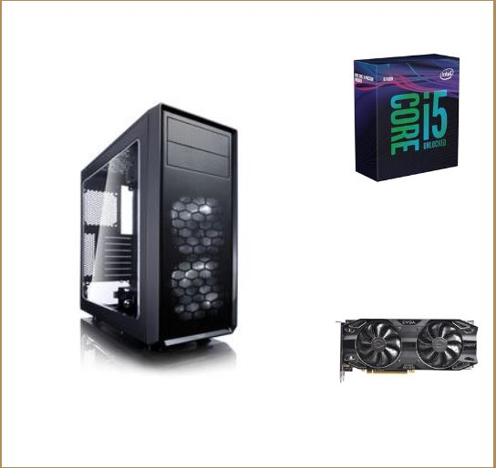
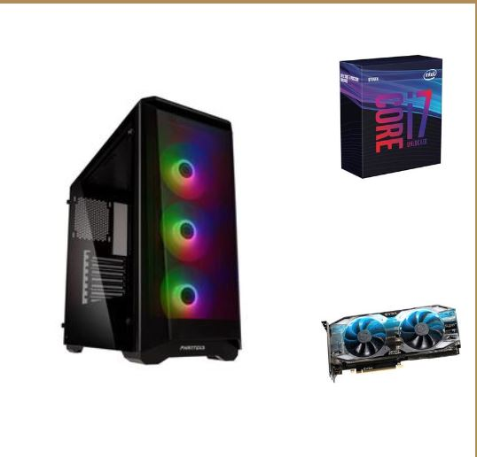
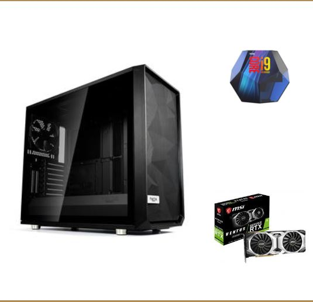

I was first introduced to pro play when I was in 2013 when Call of Duty Ghost came out. I had been playing with some pro players in Call of Duty Black Ops 2 but I didn’t decide to take it serious until the next year. When I started there was no money really to be made so the people that did it as their full-time job only made money from tournaments and streaming there was really no salaries for players. I played in the pro league until 2015 while there was really no money to be made we ended up winning a lot of tournaments.
I first started streaming back in 2014 because I saw that my teammates were making a good amount of money form it. But since I was still in high school and going to class and did not have the best set up, I did not stream that much. Another reason why I did not stream that much at the start it was a lot more of a pain setting up a stream then it is today. But when I did stream with my team it was quite a good amount of money to be made for a high schooler it was also quite fun to interact with the chat and give people some tips on how to play.
Even today I am still streaming as well as going to college. I am living in a house with two of my friends that are also streamers, so it makes for interesting content for our streams when we play together. We have really turned it into our jobs we are able to make a pretty good living form streaming. I have also changed into what I stream I now stream more cooperative games with my friends but form time to time I still play some games with my old teammates that are still in the pro since I also still have pretty good relationships with all of them.
| Beginner build | Mid-Range build | Full-time bulid |
|---|---|---|
|  |  |  |
| Visit pcpartpicker.com for beginner build | Visit pcpartpicker.com for Mid-Range build | Visit pcpartpicker.com for Full-time build |